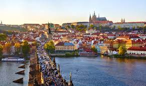

Nanjing Fuzi-Qinhuai
Nanjing is a popular city full of Chinese history and old traditional southern kinds of agriculture. As a northern people from China, Nanjing was the first city that I traveled to the region south of the Yangtze River. Confucius Temple - Qinhuai River is the most famous place to show the beauty of Nanjing.

Confucius temple has many traditional temple agricultures inside and many small shops about traditional Nanjing specialties and popular restaurants. There are also many colorful traditional lanterns which made the night of qinhuai more gorgeous. People can also take the “Hua Fang” ( a special kind of ship) to travel around the river and the whole scenery.
Photo Gallery


Palo Alto
Palo Alto is a city located in the San Francisco Bay Area in California. Palo Alto was established in 1894 when Leland Stanford founded Stanford University. It is named after a costal redwood tree called El Palo Alto. It is home to many tech companies and startups, as well as Stanford University.

Palo Alto has two main commercial areas, University Ave and California Ave, both of which have delicious restaurants and stores. Many people come to Palo Alto to see Stanford, but there’s so much more to do. Palo Alto is home to many nature preserves such as Foothills Park and the Baylands, which are popular for hiking, walking, biking, and other outdoor activities.
Photo Gallery


Prague
Prague is the location of several University of Michigan Study Abroad programs. Many schools such as LSA, Ross, Engineering, and School of Information send students annually to Eastern Europe to explore an international education for their desired topic.
Prague is a country in central Europe. It is the capital of Czech Republic. It has a lot of historical features and buildings. It is a beautiful city with a ton of architecture. Prague is a very popular destination spot for tourists.
Photo Gallery


Barcelona, Spain
Barcelona is located on the northeastern coast of Spain and is the capital of Catalonia. Barcelona is home to 1.6 million people and contains multiple different historical landmarks and interesting architecture.

Barcelona is famous for its notable architects including Antoni Gaudí and Lluís Domènech i Montaner. These architects built La Sagrada Familia, Park Guell, and Palau de la Música Catalana which are among the most famous constructions in Barcelona. Both architects are famous for their Modernisme style buildings notable for their distinct colors and organic shapes.
Photo Gallery